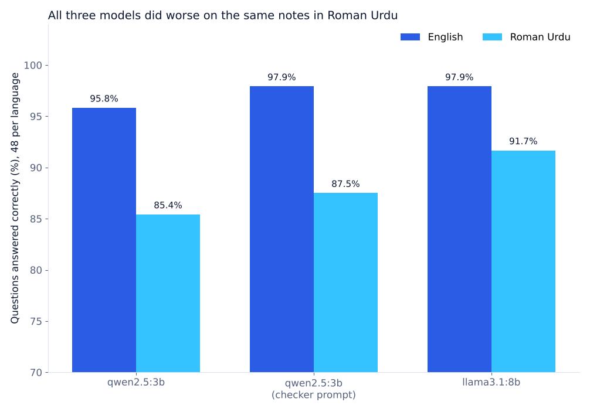

Experiment · Agentic AI · Roman Urdu
Three local AI models mixed up left and right in Roman Urdu, and were sure they were right
A second agent on the same model made the same mistakes, so the team could not catch them.
By Muzammal Hussain · 24 October 2026 · 5 min read
In my earlier simulations, agents that fail for the same reason made team voting useless. Simulated agents are easy to control, so I repeated the idea with real local models. Three AI agents read short physiotherapy notes in English and in Roman Urdu, answered yes/no questions about them, and said how sure they were. The most worrying mistakes were about something very simple: left and right.
Key findings
- Left and right broke in Roman Urdu: on 4 questions that named the wrong side, all three agents were wrong together on 3. In English, every agent got all 4 right.
- The models were sure even when wrong: 20 of the 21 wrong answers came with 100% confidence. llama3.1:8b said 100% on all 96 of its answers.
- All three models did worse in Roman Urdu: 85.4% to 91.7% correct, against 95.8% to 97.9% in English, on the same notes.
- A "careful checker" prompt did not catch anything new: every Roman Urdu mistake of the checker was also made by the plain agent on the same model.
- The team of three was worse than its best member in Roman Urdu: 87.5% for every team rule, against 91.7% for llama3.1:8b alone.
What I did
I wrote 12 short physiotherapy notes about invented patients, each in English and in Roman Urdu, with 4 yes/no questions per note: 48 questions per language. Each note has one question of each kind:
- Stated: "Is the pain worse when sitting?" (yes)
- Negation: "Does the note say there is no numbness in the legs?" (yes)
- Wrong detail: "Has the back pain lasted 3 months?" when the note says 3 weeks (no)
- Not in the note: "Has the patient had an X-ray?" when the note never mentions one (no)
Three agents answered every question in both languages, running locally with Ollama on a MacBook M4 at temperature 0: qwen2.5:3b with a plain prompt, llama3.1:8b with the same prompt, and qwen2.5:3b again with a "careful checker" prompt that tells it to check the side of the body, numbers, times and treatments. Each agent replied in JSON with an answer and a confidence from 50 to 100. That is 288 answers, and every reply was usable.
Results

| Agent | English | Roman Urdu | Mean confidence |
|---|---|---|---|
| qwen2.5:3b | 95.8% | 85.4% | 99.3% |
| qwen2.5:3b, checker prompt | 97.9% | 87.5% | 98.8% |
| llama3.1:8b | 97.9% | 91.7% | 100% |
No agent said yes to anything that was not in the note: all 24 "not in the note" questions were answered correctly by all three. Almost all Roman Urdu mistakes were on wrong details, and most of those were about the side of the body.
The left and right questions
| Roman Urdu question | The note says | Agents that answered "yes" |
|---|---|---|
| "Kya dard baayen ghutne mein hai?" (left knee) | right knee | all three |
| "Kya dard baayen eri ke neeche hai?" (left heel) | right heel | all three |
| "Kya kamzori daayen baazu mein hai?" (right arm) | left arm | all three |
| "Kya akraahat daayen kandhe mein hai?" (right shoulder) | left shoulder | both qwen2.5:3b agents |
The same four questions in English were answered correctly by every agent. In a clinic, a note that records the wrong side can lead to treatment of the wrong knee. For MeetPhysio, the clinical documentation system I am building, this is a direct warning: Roman Urdu consultations need a check on body side that does not depend on the model.
Why the checker and the team did not help
If two agents made mistakes independently, they would both be wrong on about 1.8% of the Roman Urdu questions. The plain and checker agents on qwen2.5:3b were both wrong on 12.5%, about seven times more. Every mistake the checker made, the plain agent made too. A new role changed the instructions, not the model reading the words. A different model helped a little: llama3.1:8b made fewer mistakes, but it still failed on the same three side questions. So the three votes were really closer to one vote, and the team could not outvote an error that all of its members shared.
The confidence scores could not help either. When nearly every answer says 100%, right or wrong, the number carries almost no information, so the rules that weigh or correct confidence had nothing to work with. Verbal confidence from these small models should not be used to decide when to trust them.
Limitations
This is a pilot. There are 48 questions per language, and only 4 side questions, written by me with one spelling of Roman Urdu. One run at temperature 0. The notes are invented and short, and a yes/no question is easier than writing a full note. Confidence was asked in words; token probabilities were not used. Why the models confuse "daayen" and "baayen" is not tested here; spelling, tokenisation and training data are all possible reasons.
What I will test next
- A larger set of side questions (left/right, upper/lower) with several Roman Urdu spellings, and the same questions with "right" and "left" written in English inside the Roman Urdu note.
- A simple rule-based side check that compares the side words in the note and in the output, measured on the same questions.
- Token-level probabilities instead of verbal confidence.
Models: Qwen2.5 3B and Llama 3.1 8B run locally with Ollama 0.40.10. The 48 questions in both languages, all 288 replies and the result tables are in the repository, and the experiment runs in about four minutes on a laptop. It follows When AI agents fail together, more votes do not help.